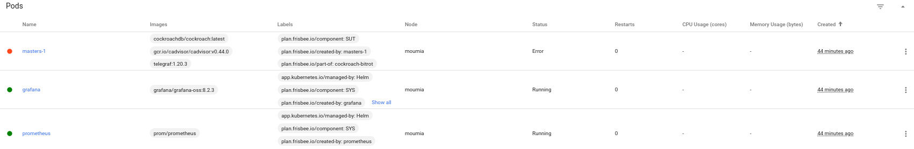

Tutorial
This tutorial will guide you through deploying and running Frisbee on a local Kubernetes installation.
Install Dependencies
1. Kubernetes and & Helm
-
Microk8s is the simplest production-grade conformant K8s. It runs entirely on your workstation or edge device.
-
Helm is a package manager for Kubernetes. Helm uses a packaging format called charts.
# Install microk8s v.1.24
>> sudo snap install microk8s --classic --channel=1.24/stable
# Use microk8s config as the default kubernetes config
>> microk8s config > ~/.kube/config
# Start microk8s
>> microk8s start
# Enable Dependencies
>> microk8s enable dns ingress helm3
# Create aliases
>> sudo snap alias microk8s.kubectl kubectl
>> sudo snap alias microk8s.helm3 helm
2. Frisbee platform
Although Frisbee can be installed directly from a Helm repository, for demonstration purposes we favor the git-based method.
# Download the source code
>> git clone git@github.com:CARV-ICS-FORTH/frisbee.git
# Move to the Frisbee project
>> cd frisbee
# Have a look at the installation configuration
>> less charts/platform/values.yaml
# Make sure that the dir "/mnt/local" exists. The error will not appear until the execution of the test.
>> mkdir /tmp/frisbee
# Deploy the platform on the default namespace
>> helm upgrade --install --wait my-frisbee ./charts/platform/ --debug -n default
Testing a System
1. Deploy the system templates
Firstly, we need to create a dedicated namespace for the test.
The different namespaces provide isolation and allow us to run multiple tests in parallel.
We combine the creation of the namespace and the installation of system templates (e.g, telemetry, chaos) in one command.
>> helm upgrade --install --wait my-system ./charts/system --debug -n mytest --create-namespace
2. Deploy the System Under Testing (SUT)
As a SUT we will use the CockroachDB.
The commands are to be executed from the Frisbee directory.
# Install Cockroach servers
>> helm upgrade --install --wait my-cockroach ./charts/cockroachdb --debug -n mytest
# Install YCSB for creating workload
>> helm upgrade --install --wait my-ycsb ./charts/ycsb --debug -n mytest
3. Verify the Deployment
Then you can verify that all the packages are successfully installed
>> helm list
NAME NAMESPACE REVISION UPDATED STATUS CHART
my-frisbee default 1 2022-06-10 20:37:26.298297945 +0300 EEST deployed platform-0.0.0
>> helm list -n mytest
NAME NAMESPACE REVISION UPDATED STATUS CHART
my-cockroach mytest 1 2022-06-10 20:40:29.741398162 +0300 EEST deployed cockroachdb-0.0.0
my-system mytest 1 2022-06-10 20:40:19.981077906 +0300 EEST deployed defaults-0.0.0
my-ycsb mytest 1 2022-06-10 20:40:36.97639544 +0300 EEST deployed ycsb-0.0.0
4. Run a Scenario
You now select which scenario you wish to run.
>> ls -1a ./charts/cockroachdb/examples/
...
10.bitrot.yml
11.network.yml
12.bitrot-logs.yml
1.baseline-single.yml
2.baseline-cluster-deterministic.yml
3.baseline-cluster-deterministic-outoforder.yml
4.baseline-cluster-nondeterministic.yml
5.scaleup-scheduled.yml
6.scaleup-conditional.yml
7.scaledown-delete.yml
8.scaledown-stop.yml
9.scaledown-kill.yml
Let's run a bitrot scenario.
>> kubectl -f ./charts/cockroachdb/examples/10.bitrot.yml apply -n mytest
testplan.frisbee.io/cockroach-bitrot created
5. Exploratory Testing (Observe the Progress)
Frisbee provides 3 methods for observing the progress of a test.
Event-based: Consumes information from the Kubernetes API
-
Dashboard: is a web-based Kubernetes user interface. You can use Dashboard to deploy containerized applications to a Kubernetes cluster, troubleshoot your containerized application, and manage the cluster resources.
-
Chaos Dashboard: is a one-step web UI for managing, designing, and monitoring chaos experiments on Chaos Mesh. It will ask for a token. You can get it from the config via
grep token ~/.kube/config.
Metrics-based: Consumes information from distributed performance metrics.
-
Log-based: Consumes information from distributed logs.
-
Logviewer (admin/admin)
You may notice that it takes long time for the experiment to start. This is due to preparing the NFS volume for collecting the logs from the various services. Also note that the lifecycle of the volume is bind to that of the test. If the test is deleted, the volume will be garbage collected automatically.
6. Automated Testing (Pass/Fail)
The above tools are for understanding the behavior of a system, but do not help with test automation.
Besides the visual information, we need something that can be used in external scripts.
We will use kubectl since is the most common CLI interface between Kubernetes API and third-party applications.
Firstly, let's inspect the test plan.
>> kubectl describe testplan.frisbee.io/cockroach-bitrot -n mytest
...
Status:
Conditions:
Last Transition Time: 2022-06-11T18:16:37Z
Message: failed jobs: [run-workload]
Reason: JobHasFailed
Status: True
Type: UnexpectedTermination
Executed Actions:
Bitrot:
Boot:
Import - Workload:
Masters:
Run - Workload:
Grafana Endpoint: grafana-mytest.localhost
Message: failed jobs: [run-workload]
Phase: Failed
Prometheus Endpoint: prometheus-mytest.localhost
Reason: JobHasFailed
We are interested in the Phase and Conditions fields that provides information about the present status of a test.
The Phase describes the lifecycle of a Test.
| Phase | Description |
|---|---|
| "" | The request is not yet accepted by the controller |
| Pending | The request has been accepted by the Kubernetes cluster, but one of the child jobs has not been created. This includes the time waiting for logical dependencies, Ports discovery, data rewiring, and placement of Pods. |
| Running | All the child jobs have been created, and at least one job is still running. |
| Success | All jobs have voluntarily exited. |
| Failed | At least one job of the CR has terminated in a failure (exited with a non-zero exit code or was stopped by the system). |
The Phase is a top-level description calculated based on some Conditions. The Conditions describe the various stages the Test has been through.
| Condition | Description |
|---|---|
| Initialized | The workflow has been initialized |
| AllJobsAreScheduled | All jobs have been successfully scheduled. |
| AllJobsAreCompleted | All jobs have been successfully completed. |
| UnexpectedTermination | At least job that has been unexpectedly terminated. |
To avoid continuous inspection via polling, we use the wait function of kubectl.
In the specific bitrot scenario, the test will pass only it has reached an UnexpectedTermination within 10 minutes of execution.
>> kubectl wait --for=condition=UnexpectedTermination --timeout=10m testplan.frisbee.io/cockroach-bitrot -n mytest
testplan.frisbee.io/cockroach-bitrot condition met
Indeed, the condition is met, meaning that the test has failed. We can visually verify it from the Dashboard .

To reduce the noise when debugging a failed test, Frisbee automatically deletes all the jobs, expect for the failed one (masters-1), and the telemetry stack (grafana/prometheus).
If the condition is not met within the specified timeout,
kubectlwill exit with failure code (1) and the following error message:"error: timed out waiting for the condition on testplans/cockroach-bitrot"
7. Delete a Test
The deletion is as simple as the creation of a test.
>> kubectl -f /charts/cockroachdb/examples/10.bitrot.yml -n mytest delete --cascade=foreground
testplan.frisbee.io "cockroach-bitrot" deleted
The flag cascade=foreground will wait until the experiment is actually deleted. Without this flag, the deletion will
happen in the background. Use this flag if you want to run sequential tests, without interference.
8. Parallel Tests
For the time being, the safest to run multiple experiments is to run each test on a dedicated namespace.
To do so, you have to repeat Step 1, replacing the -n .... flag with a different namespace.
For example:
- Run bitrot
>> helm upgrade --install --wait my-system ./charts/system --debug -n mytest --create-namespace
>> helm upgrade --install --wait my-cockroach ./charts/cockroachdb --debug -n mytest
>> helm upgrade --install --wait my-ycsb ./charts/ycsb --debug -n mytest
>> kubectl -f ./charts/cockroachdb/examples/10.bitrot.yml apply -n mytest
# go to http://grafana-mytest.localhost/d/crdb-console-runtime/crdb-console-runtime
- Run network failure
>> helm upgrade --install --wait my-system ./charts/system --debug -n mytest2 --create-namespace
>> helm upgrade --install --wait my-cockroach ./charts/cockroachdb --debug -n mytest2
>> helm upgrade --install --wait my-ycsb ./charts/ycsb --debug -n mytest2
>> kubectl -f ./charts/cockroachdb/examples/11.network.yml apply -n mytest2
# go to http://grafana-mytest2.localhost/d/crdb-console-runtime/crdb-console-runtime
Notice that for every experiment, we start a new dedicated monitoring stack.
Remove Frisbee
1. Delete all the namespaces you created
By deleting the namespaces, you also delete all the installed components.
>> kubectl delete namespace mytest mytest2 --wait
Notice that it may take some time.
2. Remove Frisbee
>> helm uninstall my-frisbee --debug -n default
3. Remove Frisbee CRDS
Because Helm does not delete CRDs for secure reasons, we must do it manually.
>> kubectl get crds | awk /frisbee.io/'{print $1}' | xargs -I{} kubectl delete crds {}